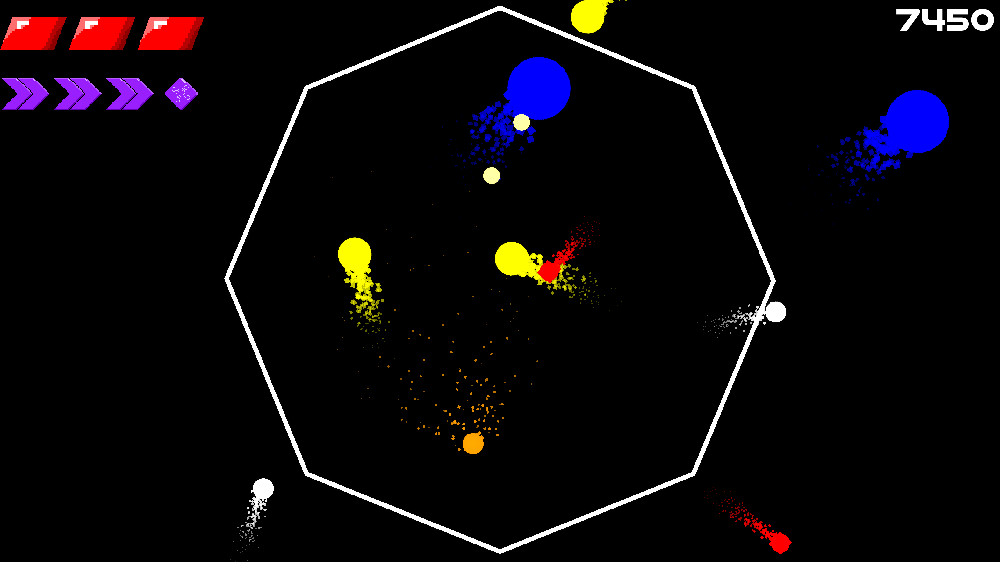
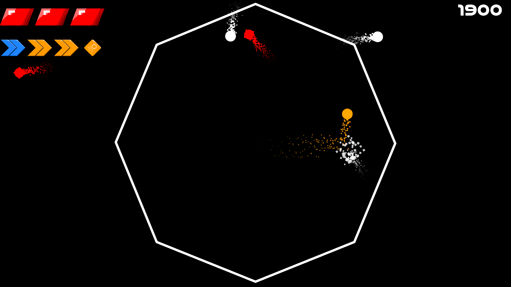
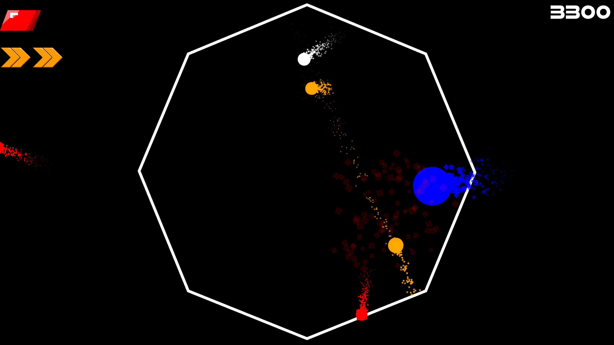
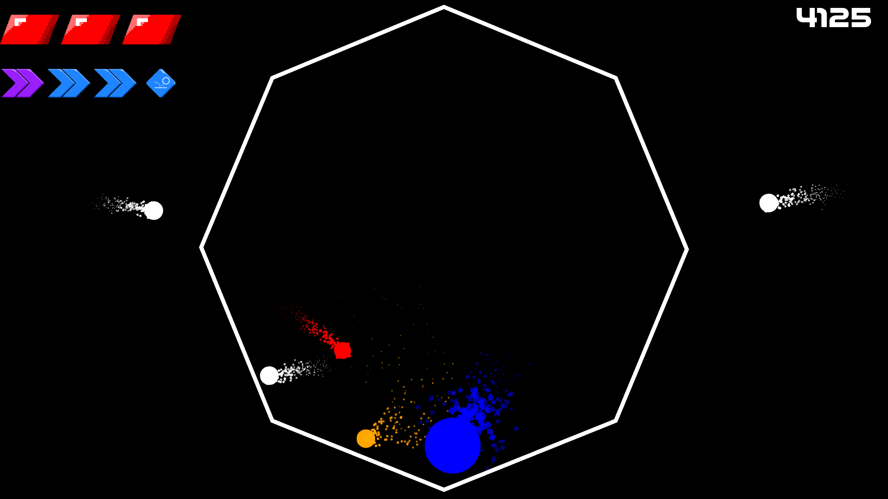
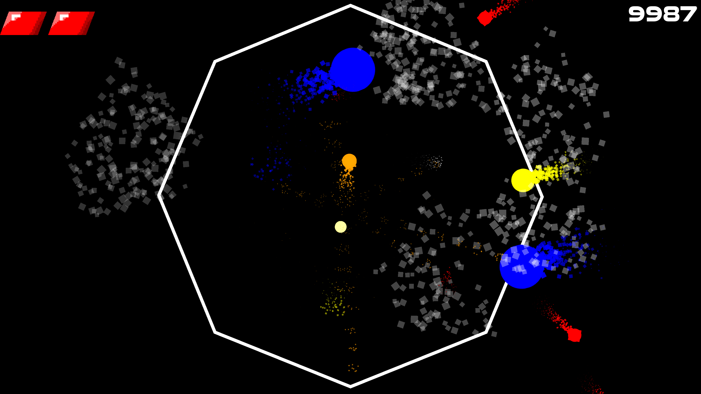

Orball
Overview
Orball is a simple high score arcade game where you steer your orange ball to collide with incoming balls to destroy and increase your high score. Colliding with other balls will increase your speed, unlocking abilities to help clear the area faster but becoming more difficult to steer.
Project Goal
Orball is a game jam submission for the Godot Wild Jam #88 event. The Game Jam took place over 10 days, where participants were tasked to finish creating a video game following the Jam's prompt Momentum.
Development
Development was over the course of 10 days, however due to outside events, a majority of the development was on the final 3 days. Developing a full physics game was out of scope as I lacked experience in creating physics based games.
I've attempted a previous Game Jam before, but was unsuccessful in putting a game that was supported on the browser. The game also lacked a lot of polish as many mechanics were not realized and the game did not feel fun to control or play.
With the goal of creating a simple arcade style game, I want to create something simple that players can pick up quickly and play for a short amount of time.
Many of the goals for the game were reached with minor adjustments along the way. Along the way, new tasks were added in order to improve gameplay and game understanding such as simple prompts explaining controls and goals.
Game Mechanics Include:
Gameplay Features
Game Features Include:
- Accelerating movement after successful collisions of targets.
- Ability system to assist in scoring points and survivability at the cost of momentum.
- Variety of targets with risk and reward.
- A consistent art style.
- Sound effects and particles for satisfying collisions
Results and Review
The game performed decent in the Game Jam, placing 80th out of 155 entries. Many of the scoring criterias were rated above average, with the simple controls ranked 40th.

The worse performing criterias were graphics and audio. As the game was mainly flat objects, it is understandable. The game does have an environmental glow the help with effects, but exporting my game to web removes the environmental glow.
As for audio, even though I believe the sound effects were fitting, the lack of ambience or background music, along with the quietness of the game caused the game to feel boring to many.
Overall, I'm happy with Orball and satisfied with what I accomplished. Though I wished I placed higher, being able to create a game that is replayable was a great learning experience in what it takes to create a successful game. I had more that I wanted to add in Orball but ran out of time. Eventually I do plan to provide some minor updates, even if they go unnoticed.
Gallery



